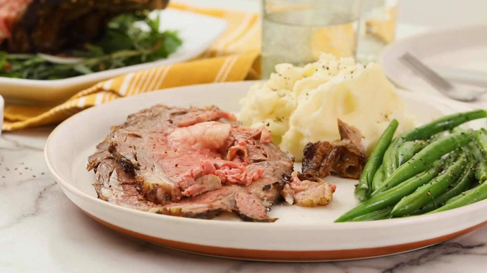

Easy Rib Eye Roast
I make this every time rib eyes are on sale. Easy and delicious; there are never any leftovers! We usually cook ours medium-rare!

Description
Tender, succulent and very flavorful, ribeye is my favorite cut of beef. And this tasty recipe for cooking the whole roast is especially easy to make.
Simply rub the meat with seasonings, then cook it in the oven until done. Your only real job as a cook is to avoid overcooking the meat.
Ingredients
- 1 cup softened butter
- 6 cloves garlic, minced
- 1 (4 pound) bone-in rib-eye roast
- sea salt to taste
- cracked black pepper to taste
Directions
- Preheat an oven to 500 degrees F (260 degrees C).
- Beat butter and garlic together in a bowl. Poke several holes in roast with a sharp knife. Rub butter mixture all over roast and season meat with salt and black pepper. Place roast, fat-side up, in a roasting pan.
- Roast in the preheated oven for 20 minutes, reduce heat to 325 degrees F (165 degrees C), and continue cooking until roast is reddish-pink and juicy in the center, 1 1/2 to 2 hours. An instant-read thermometer inserted into the center should read 145 degrees F (63 degrees C)
Back